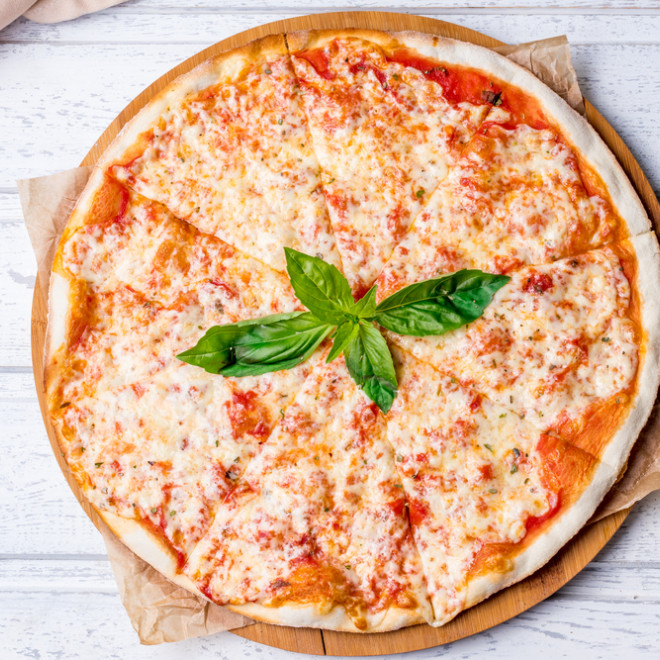

Pizza

This margarita pizza is excellent trust me! ;)
Ingredients:
- 1 (12 inch) pre-baked pizza crust
- ½ cup pesto
- 1 ripe tomato, chopped
- ½ cup green bell pepper, chopped
- 1 (2 ounce) can chopped black olives, drained
- ½ small red onion, chopped
- 1 (4 ounce) can artichoke hearts, drained and sliced
- 1 cup crumbled feta cheese
Directions:
- Preheat oven to 350 degrees F (175 degrees C).
- In a large bowl, combine the pesto, tomato, green pepper, olives, onion, artichoke hearts, and feta cheese.
- Place the pizza crust on a rimmed baking sheet. Spread the pesto mixture evenly over the pizza crust.
- Bake in the preheated oven until the crust is golden and the cheese is bubbly, about 15 minutes.
- Remove from oven and let cool for 10 minutes before serving.